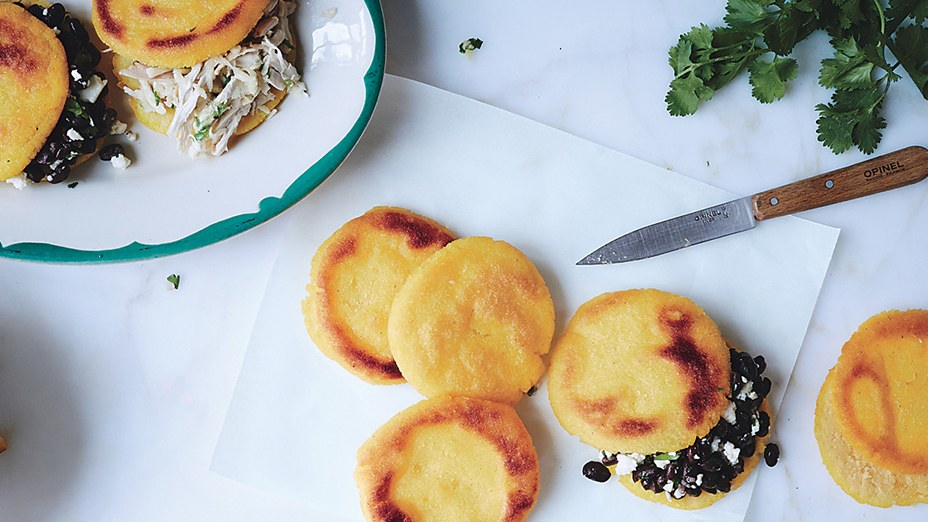

Chef Ryan Pera's favorite arepa recipe

Total: 40
4 Servings
Published: July 2017
Arepas
Chef Ryan Pera, Coltivare Pizza & Garden, Houston, learned the art of arepas from his sister-in-law. Now, this recipe is his easy sunday meal of choice, packed with leftovers or farm-fresh produce.
Ingredients
Makes 4 servings
- 2 cups arepa flour (precooked cornmeal)
- 2 teaspoons kosher salt
- 2 tablespoons vegetable oil
- Desired fillings (such as shredded cooked chicken or pork, stewed black beans with cheese and lime, or corn salad with onion and fresh herbs (for serving))
- Lime wedges (for serving)
Ingredient Info
Arepa flour is precooked corn flour, not to be confused with masa harina. Sometimes solad as masarepa or harina precocida, it can be found in latin markets and some supermarkets.
Preparation
- Combine arepa flour and salt in a medium bowl. Make a well in the center and add 2 1/2 cups warm water. Using a wooden spoon, gradually incorporate dry ingredients, stirring until no dry lumps remain. Let rest 5 minutes to hydrate.
- Knead dough a few times in bowl, then divide into 8 pieces. Roll each piece on work surface into a ball, then gently flatten to about 1/2" thick.
- Heat 1 Tbsp. oil in a large nonstick skillet over medium heat. Add 4 arepas, cover, and cook until golden brown, 6-8 minutes. Uncover, Flip, and cook (keep uncovered) until other side is golden brown, 6-8 minutes. Transfer arepas to a wire rack. Repeat with remaining 1 Tbsp. oil and dough.
- Split Arepas and stuff with desired fillings; serve with lime wedges for squeezing over.4
Finished Arepas
